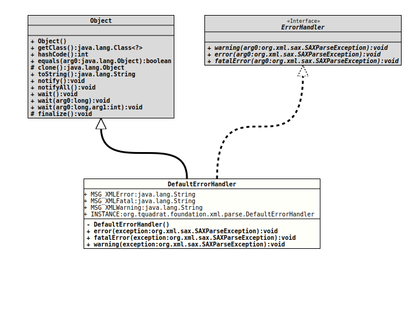

Module org.tquadrat.foundation.xml
Class DefaultErrorHandler
java.lang.Object
org.tquadrat.foundation.xml.parse.DefaultErrorHandler
- All Implemented Interfaces:
ErrorHandler
@ClassVersion(sourceVersion="$Id: DefaultErrorHandler.java 1071 2023-09-30 01:49:32Z tquadrat $")
@API(status=STABLE,
since="0.0.5")
public final class DefaultErrorHandler
extends Object
implements ErrorHandler
This implementation for a
XML Error handler
will write the error messages to
System.err.
The one and only instance for this class can be obtained using the
INSTANCE
constant.
This simple initialisation pattern was chosen instead of a full Singleton setup because the error handler does not maintain a state.
- Author:
- Thomas Thrien (thomas.thrien@tquadrat.org)
- Version:
- $Id: DefaultErrorHandler.java 1071 2023-09-30 01:49:32Z tquadrat $
- Since:
- 0.0.5
- UML Diagram
-

UML Diagram for "org.tquadrat.foundation.xml.parse.DefaultErrorHandler"
{kind=link}
-
Field Summary
FieldsModifier and TypeFieldDescriptionstatic final DefaultErrorHandlerThe one and only instance of this class.static final StringThe Error Message.static final StringThe Fatal Error Message.static final StringThe Warning Message. -
Constructor Summary
ConstructorsModifierConstructorDescriptionprivateCreates a newDefaultErrorHandlerinstance. -
Method Summary
Modifier and TypeMethodDescriptionfinal voiderror(SAXParseException exception) Receives and processes notification of a recoverable parser error.final voidfatalError(SAXParseException exception) Receives and processes notification of a fatal parser error.final voidwarning(SAXParseException exception) Receives and processes notification of a parser warning.
-
Field Details
-
MSG_XMLError
The Error Message.- See Also:
-
MSG_XMLFatal
The Fatal Error Message.- See Also:
-
MSG_XMLWarning
The Warning Message.- See Also:
-
INSTANCE
The one and only instance of this class.
-
-
Constructor Details
-
DefaultErrorHandler
private DefaultErrorHandler()Creates a newDefaultErrorHandlerinstance.
-
-
Method Details
-
error
Receives and processes notification of a recoverable parser error. This implementation will just print the error toSystem.out..- Specified by:
errorin interfaceErrorHandler- Parameters:
exception- The error exception.
-
fatalError
Receives and processes notification of a fatal parser error. This implementation will just print the error toSystem.out..- Specified by:
fatalErrorin interfaceErrorHandler- Parameters:
exception- The error exception.
-
warning
Receives and processes notification of a parser warning. This implementation will just print the warning toSystem.out..- Specified by:
warningin interfaceErrorHandler- Parameters:
exception- The error exception.
-